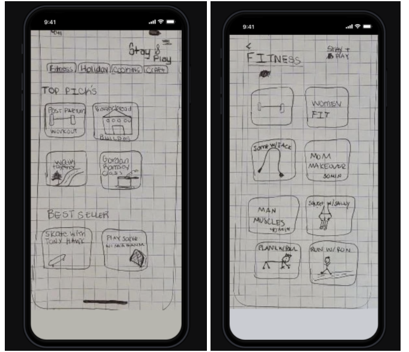
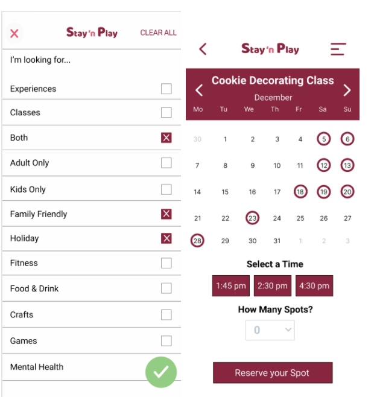

Design Challenge
Stay N Play: Where No Connection is to Far
Project Background
Overview
For our group project are goal was to create a new app for a brand new mobile application. We believe that providing a virtual environment platform will be able create an all inclusive social experience for users to connect with family and friends.
Challenge
COVID 19 has put a halt to everyone's activities. With everyone staying at home, it is hard to come up with unique activities to get people out of their everyday routines.
Goal
We believe that providing a virtual environment platform will be able create an all inclusive social experience for users to connect with family and friends.
Design Process
- Empathize-Survey, User Interview
- Define-User Persona, User Journey Map
- Ideate-Brain Storming Ideas, I Like, I Wish, What if Method
- Build-Wireframe, Prototype
- Test-Usabality Testing, Final UI Screens
My Role
- UX Design & Research
- UI Design
Empathize
Researgh goals
- Gain insight on how people are interacting with eachother in the pandemic
- What activies are people participating online
- Uncover how users connect with people
User Interviews Results
We conducted five interviews to gain insight on how people are navigating through the pandemic and how it has affected their ability to connect with people within and outside of their household.
Most users we interviewed are experiencing loneliness and even though they are connected with their friends via social media isn't enganing enough
Define
Persona & Journey Map
After our interviews, our team developed Sara, our main persona. Sarah, an overwhelmed mother
of two, needs a meaningful way to connect with her family and friends because Covid 19 has limited her ability to physically connect to her community thus causing her to feel bored, depressed, and disconnected.

Ideate
Defining Problem
During our user interviews, we discovered that our users feel isolated and are in need of meaningful connections due to the Pandemic.
We can accomplish this by allowing users to coordinate virtual classes chosen by the users interest.
This platform will include features such as private and public video classrooms. The user can engage with others through our live group messaging. Doing this will allow users to engage with family and friends through a tailored virtual experience.
Feature Prorization Matrix
The priorizition was helpful for our team to identify for our team which featurues were the most important to our users
Sketches
Before moving to tools for desinging we started sketching a few designs to see what ideas we could come up with
Build
Wireframe
Based on the sketches we created a wirefreame.
Usability Testing Results
- Users didn’t know what to do after the invitation was copied and what that meant
- Users didn't want to leave the app to send link to family and friends
- Users were unsure where the preference were or why they mattered
- Users were confused by how to see classes they had registered for
Final Thoughts
In conclusion, as a team we have learned the importance of applying user insights to our iterations versus what we as designers feel is best.
We have also learned that the problem statement should not outline our solution but indicate how it might play out.